08. Приближение
比
bǐ

比 吉。原筮元永貞。无咎。不寧方來。後夫凶。
bǐ jí. yuán shì yuán yǒng zhēn. wú jiù. bù níng fāng lái. hòu fū xiōng
初六 有孚比之。无咎。有孚盈缶。終來有它吉。
chū liù yǒu fú bǐ zhī. wú jiù. yǒu fú yíng fǒu. zhōng lái yǒu tā jí
六二 比之自內。貞吉。
liù èr bǐ zhī zì nèi. zhēn jí
六三 比之匪人。
liù sān bǐ zhī fěi rén
六四 外比之。貞吉。
liù sì wài bǐ zhī. zhēn jí
九五 顯比。王用三驅。失前禽。邑人不誡。吉。
jiǔ wǔ xiǎn bǐ. wáng yòng sān qū. shī qián qín. yì rén bù jiè. jí
上六 比之无首。凶。
shàng liù bǐ zhī wú shǒu. xiōng
Приближение. Счастье. Вникни в оракул, и от изначальной вечной стойкости хулы не будет. Не лучше ли сразу прийти? Кто опоздает, тому - несчастье.
1. В начале слабая черта. Приближайся к тому, кто обладает правдой. Хулы не будет. Он полон правдой, как наполненный кувшин. Полностью придешь к нему, и будет счастье и для других.
2. Слабая черта на втором месте. Приближайся к нему изнутри. Стойкость - к счастью.
3. Слабая черта на третьем месте. Приближаешься к нему, но он не тот.
4. Слабая черта на четвертом месте. Внешнее приближение к нему. Стойкость - к счастью.
5. Сильная черта на пятом месте. Явленное приближение. Царю следует ставить загонщиков лишь с трех сторон и упускать дичь, которая впереди. Тогда для горожан не будет запретов. Счастье.
6. Наверху слабая черта. Приближение к нему лишено главного. Несчастье.
Достижение победы - завоевание - это лишь момент, результат которого должен быть закреплен. Действие, направленное на закрепление победы, характеризует данную ситуацию. Оно состоит во взаимном сближении победителя и завоеванной им области, которое возможно потому, что победа обозначает уничтожение и подчинение всего того, что чуждо, что не способно к сближению. Для последнего здесь необходимо поставить правильный прогноз будущего развития, причем речь пока идет не столько о достижении благосостояния завоевываемой области, сколько о предотвращении внешних сил, действующих разрушительно. Если для предыдущей ситуации момент победы является последним моментом, то для данной ситуации он выступает в роли ее начала. В нем те изначальные соотношения, которые подлежат стойкому сохранению на все будущее. Так дело обстоит с точки зрения того, к кому [оно] приближается. Для тех же, которые приближаются к нему, необходимо иметь в виду то, что в данной ситуации возможно самое благотворное сближение, которым должны воспользоваться сразу же все способные к сближению. Опоздание в таких условиях равносильно отказу, равносильно превращению из соучастника победы в побежденного и разбитого. - В процессе познания, пока новое знание еще не достигнуто, приходится проделывать различные действия для его достижения. Тут и противопоставление знания незнанию, и приведение в стройность хаоса переживаний, и проникновение в пока недоступную стихию еще не познанного, и отграничение от случайных, мешающих представлений. Но вот познание завоевано. Это значит, что все эти действия доведены до положительного результата. Тогда в области познания все родственное ей достижимо, ничто чуждое ей не препятствует. Возможно и нужно сближение нового, высшего познания с прежде познанным. То, что сохраняет в последнем силу убедительности, несмотря на достижение нового познания, стоящего на высшей ступени, сразу же объединяется с ним в единую систему знания. Те же познания предыдущих ступеней, которые в данный момент являются опоздавшими, т. е. уже не пригодными, обречены на гибель. Такова промежуточная ситуация между завоеванием победы и будущим воспитательным действием ее.
1. Самый далекий от победителя и в то же время самый податливый круг подчиненных лишен возможности самостоятельно действовать. Он самым интенсивным образом стремится приблизиться к победителю, ибо в нем особенно чувствуется удаление от победителя, который (принимая во внимание предыдущий комментарий) предстает здесь как носитель нового, истинного познания: как «обладатель правды». Отношения здесь, в начале сближения, еще чрезвычайно просты, лишены вычурности и искусственности. Поэтому «обладатель правды» полон ею, как простой бесхитростный глиняный кувшин полон водой. Не во внешности его дело, а в его содержании. Каждый приближающийся к нему, даже действуя ради себя самого, совершает все же то, чего требует ситуация. Поэтому, приходя к нему безоговорочно, до конца, он созидает счастье не только для себя, но также и для других. Пассивно храня свое знание, он включается вместе с ним во всю систему вновь завоеванного уровня миропонимания и образует для последнего как бы границу, оформляющую его. В этом полезное действие простого человеческого рассудка, здравого смысла, который заменяется иными типами познания на дальнейших этапах.
2. То приближение, которое мыслится здесь, - это не внешняя, не чисто пространственная близость, а сближение по существу, для которого определяющим является лишь внутреннее созвучие. Поэтому в процессе данной ситуации в первую очередь учитывается ее ритм и созвучия данного ритма. Мы уже неоднократно видели, что процесс, выраженный в той или иной гексаграмме, представляет собою ритм двух волн, в которых вторая и пятая позиции выражают высшие точки развития каждой волны. Поэтому между ними существует такое именно внутреннее сродство. Здесь оно еще поддержано противоположностью сил Света (5) и Тьмы (2), а, следовательно, и их взаимным тяготением. При всем этом здесь обе эти силы занимают свои позиции нормально. Поэтому именно между ними, возможно, самое правильное, самое плодотворное сближение. Если в нем вся суть данной гексаграммы, то в данной черте она выражена более всего по существу лишь в понятиях, тогда как ее образная разработка в представлениях будет показана в тексте пятой черты. Здесь также отмечается тот момент в познании, который характеризуется страстью, тяготением к познанию, но также и полной возможностью реализовать это тяготение. Оно есть, и ничто ему не препятствует. Последнее даже выражается чисто графически: ведь между второй чертой (субъект желания) и пятой (объект желания) нет сильных, могущих оказывать сопротивление черт. Однако на данном этапе имеется в виду лишь приближение, но еще не достижение объекта желания. И если для пятой позиции, как увидим, будет характерно полное и совершенное познание, то для данной - лишь стремление к нему и обладание им не реально, а лишь в идеале. Последнее, все же, возможно, потому что грань между внутренним и внешним здесь уничтожена силой созвучия и взаимного тяготения их.
3. Стремление к объекту - высшему идеалу - остается и здесь, но более благоприятные условия уже миновали. Речь здесь идет об опоздавших, о которых говорится в тексте самой гексаграммы. Уже само стремление есть сила, а наличие силы необходимо вызывает противоборство. Так субъект здесь лицом к лицу противостоит всем отрицательным силам, которые в комментаторской литературе иногда рассматриваются как инфернальные. Это выражено и в том, что здесь налично лишь стремление к идеалу при полной невозможности осуществления его, ибо качества, столь благотворно действовавшие на предыдущий ступени: созвучие, нормальность, сосредоточенность, полностью отсутствуют здесь. Последняя возможна лишь на второй и на пятой (центральной в триграмме) ступенях, первая же и вторая на данной позиции отсутствуют: и третья и шестая позиции заняты однородными и поэтому несозвучными силами, и третья, нечетная позиция занята не по норме слабой чертой.
4. После пережитого кризиса приближение опять возможно, однако внутреннее сродство уже не восстановимо. Для него время уже упущено. И единственное, что здесь возможно, - это внешняя, пространственная близость, которая в данных условиях тоже значима. - Если речь была о внутреннем сродстве понятий, то теперь дело идет о близости их сопоставления. При этом, конечно, грани сопоставленных понятий разделяют их, как и соединяют, т.е. «сближают». Для удачи здесь нужно лишь стойкость сохранения такого status quo. Древнейшая комментаторская традиция считает эту близость близостью к правителю его советников, между которыми она может поддерживаться не в силу внутреннего созвучия, а лишь в силу подчинения советников верховной власти.
5. Если в предыдущем приближение рассматривалось со стороны тех, которые приближаются, то теперь оно рассматривается со стороны того, к кому приближаются. Этот объект приближения выражен единственной световой чертой, к которой, в силу полярности, тяготеют все остальные. Здесь достаточно одного качества этого объекта, его явности, которое сообщает оттенок явности всему процессу приближения. Однако это не пассивное допущение бесформенного и вольного приближения, а совершенно определенное оформление свободы приближающихся. Оно выражено в образах, заимствованных из обрядов древнего Китая. Как на это указывает один из значительных комментаторы - сунский Чэн И-чуано, уже при династии Чжоу существовал культовый обряд царской охоты, при котором загонщики ставились лишь с трех сторон поля. Четвертая же сторона бывала, открыта, и дичь, которая бежала от охотящегося царя, могла свободно избежать смерти. Таким образом, оказывались убитыми лишь те животные, которые шли прямо на охотника, которым «жизнь не была нужна» и они «сами отдавали ее ему». Полагали, что такое действие царя является сильно действующим прообразом для всего населения, что оказываются излишними всякие запреты. Так выражена эта свобода, оформленная все же рамками необходимости.
6. Последняя ступень указывает на некоторое переразвитие. Таково и переразвитие приближения. В нем утрачено ощущение объекта приближения, и остается лишь само приближение неизвестно к чему. Одно бесцельное стремление. Безвыходность состояния.